This project is centred on a Portuguese book-game hybrid from 1540. The purpose of the original book-game is to teach adolescents how to live a good life through being virtuous. The book and the game’s theoretical foundation is largely based on Aristotle’s moral theory (see Aristotle), but the author adds Christian elements as well. In our project, which we call “Hacking the Good Life”, we study, take apart and re-work João de Barros’ creation, starting from the original material, extending it and playing with it to see where the process leads us. The project is still in progress, and in this edition of The Digital Review, we share the results of our process to date. Read below to try out some of our digital approaches to the game of Moral Virtues!
You can navigate to our five hacks above (* numbers 3. - 5. are hands on and interactive), or continue reading below for the full project, with context, background and a description of our process.
By the middle of the 16th century, João de Barros, in his forties, had published six books in print, edited a few other manuscripts, and ran the empire’s import business for around twenty years. Father of eight, a religious man, Barros was friends with the King but a critic of the court life. In the following decades, he came to write his major literary work, Decadas da Ásia (Barros 1552, 1553, 1563), granting himself a place in Portuguese Historiography.
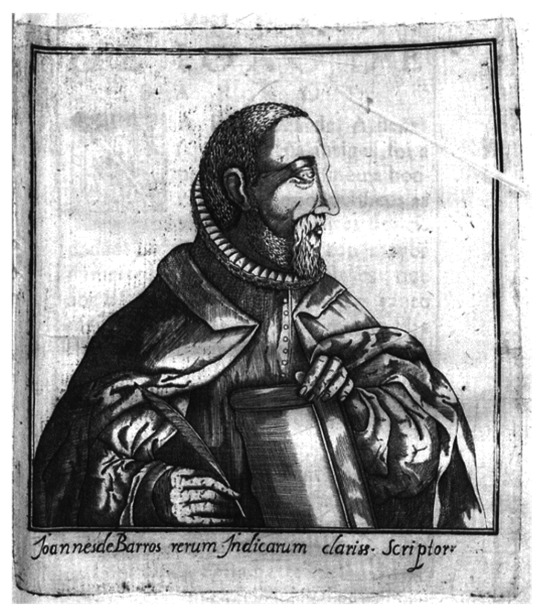Figure 1. Portrait of João de Barros in Manuel de Severim Faria, Discursos Varios Politicos, Évora: Manuel Carvalho, 1624.
The 1540 book and game (Barros 1540) which we present here was published twice in João de Barros’ lifetime and although it is a remarkable piece, it has been nearly forgotten for almost 500 years. There are very few copies remaining, and only one is complete with the game’s components: it is the second edition, printed in 1563 by João de Barreira and held by the Portuguese National Library, titled Dialogo de João de Barros com dous filhos seus, sobre preceptos moraes, em modo de jogo (Barros 1563).
The Dialogo is a theory-through-practice exercise that introduces readers and players to Aristotelian Ethics. It is a dialogue between Barros, the father, and two of his sons, António and Catarina, divided into three parts: an introduction to moral theory, including a prologue on the author’s aims and a lengthy review of his diagram of the Tree of Virtues and Vices; an explanation of the game with the boards, spinner and pieces of the game in the form of detachable woodcuts; and the rules to play it.
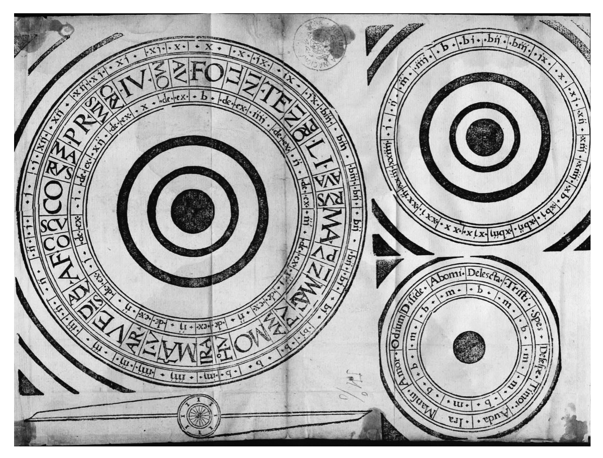Figure 2. The three original rotating boards of the game (and pointer) are meant to be detached and set up to calculate moves and points: they include a large wheel with 12 virtues and 24 vices, a middle wheel for “intentions and remissions” with 24 degrees and a smaller wheel for the 12 passions divided into good and bad passions.
In 2018, designer-researcher Celeste Pedro started studying Barros’ book, which resulted in an article covering the typographical details of its production (Pedro 2021). In the following years, she focused on the game itself and developed a revised digital drawing while noticing inaccuracies in the work that made the game challenging to play. The most relevant inaccuracy was the racing board, described in the text but missing from every copy (to this day, and it is impossible to know whether it ever existed). Another inaccuracy was a clear reference to the two players having different coloured pieces, yet in the book there is only one set of pieces, and they were printed on the recto and verso of the folios, making these unusable if detached. A third example is the spinner, which has two equal endpoints, bringing many questions regarding choice and strategy in the game.
Once these issues were identified, Celeste and José Higuera (a scholar of Ramon Llull) facilitated a workshop to test the game’s playability (Pedro & Higuera 2020). New questions were raised at that two-day event, and issues were tentatively resolved in the following months – including a new board where pieces could race. Unfortunately, all was put on hold during the pandemic.
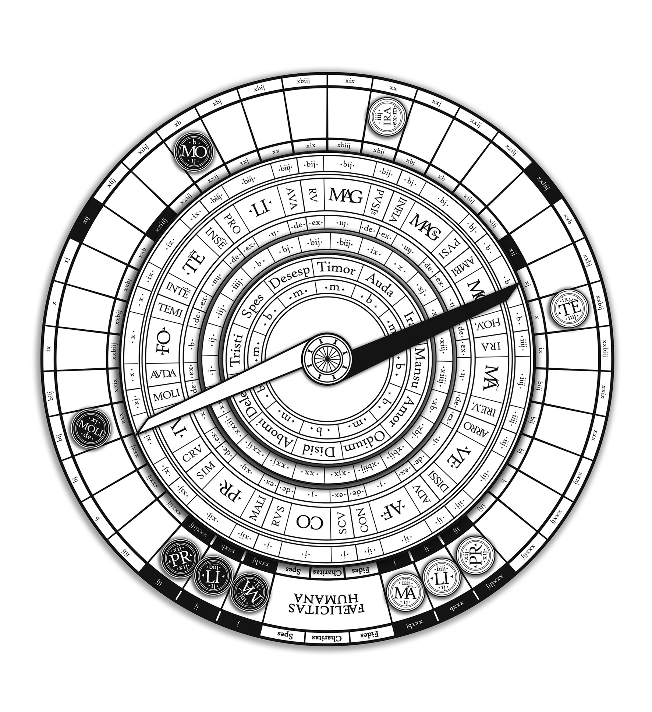Figure 3. The first step in the process: a playable and printable prototype of the game, true to Barros' original instructions, with an added fourth circle, two-colour pieces and a two-colour spinner, designed by Celeste Pedro.
In 2022, artist-researcher Terhi Marttila gave the study a new impetus, and the “Hacking the Good Life” project was born. If, on the one side, the project is still grounded on historical analyses and research, on the other, it further aims to deconstruct and reinterpret the author’s and the game’s theory through contemporary practices.
The project’s team has since been expanding with the collaboration of Sandra Simões - a translator specialised in vernacular Portuguese, Luradontsurf - an illustrator, Dr. Luciana Lima - a digital games researcher with a psychology background, and Prof. Dr. José Meirinhos - a philosopher and medievalist (for full bios of team members visit https://historicaltype.eu/hacking).
A good example of the beauty of Barros’ book is the tree of Virtues which is depicted below in Latin (original) on the left and English (translation) on the right. Barros’ engraving of the Tree of Virtues and Vices portrays the Aristotelian virtues and vices from the point of view of the “Doctrine of the Mean”. And that's why, unlike medieval virtue and vice trees, it combines 12 virtues and 24 vices in a single tree. It also positions the soul and the intellectual processes (culminating in free will) at the root of the tree - which was previously reserved for God, at the same time as it places the fruit of the tree (happiness) mediated by the theological virtues that Man cannot attain but by Him.
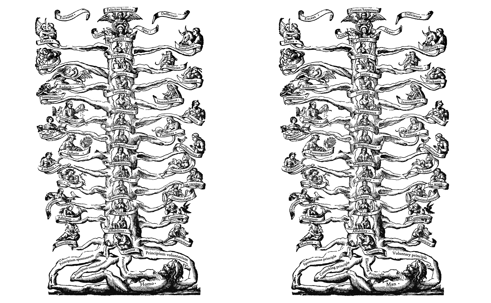Figure 4. The tree of virtues and vices from Barros' book, with virtues and vices in latin and english. This replica of the illustration was digitally hand drawn by tracing over the original woodcut by illustrator @luradontsurf
Many of Dialogo’s philosophical questions still resonate with our everyday concerns, and the relevance of moral ethics is still felt in our societies. Barros’ work is mesmerising for its depth; it is visually intriguing and full of philosophical and moral teachings that continuously question our beliefs, but when one sits down to play it according to Barros’ rules, the game is not fun at all. Rules are multidimensional, and each move implies a complex set of calculations that trip up even a seasoned scholar of this work.
Playing the game becomes about referring to the text way too often and departs from the author’s original intention of using a didactic artifice to train oneself for the good life. This is the standing ground from where we started developing this digital work-in-progress that allows us to explore the book and game in a practice-based and playful way. Barros’ main contribution was the codification and adaptation of prior philosophical works, and we will continue this lineage by further hacking the game. Below we present the outcomes of our project, to date.
The first outcome of “Hacking the Good Life” is a booklet introducing the project and the most relevant concepts taken from the Nicomachean Ethics. The booklet includes the game board and pieces which can, as in the original book by Barros, be printed, cut out, set, and played. We have also revised the game's rules and rewritten them in a more contemporary vernacular.
Click on the image below to open the booklet PDF:
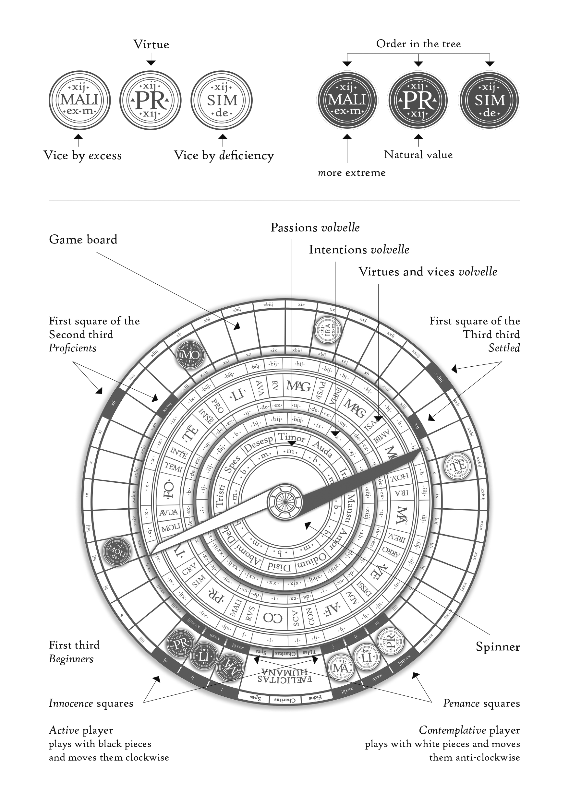Figure 5. Diagram of the game’s components designed for the booklet. DOI: https://doi.org/10.21747/978-989-9082-75-5/hac
In our practice-based approach to studying Barros’ book/game, our starting point is to work with and through the aspects that we find captivating about the book/game. The following hacks are the aspects that we have been working on to date.
Because one of the downsides of the original game is its complexity, mainly with respect to the calculation of moves and points, we came up with some tentative, simplified rules for the game that allow two players to race the virtues and vices to the finishing line. To make the game board accessible to a wider audience, and to allow us to explore and use the game board in our research process without having the physical game board on hand, we created a digitally rotating game board for the browser. Besides this, we are juggling other ideas for simpler rules that we will test out in further stages of the project. We are also trying to understand whether a simplification of the rules is possible without losing sight of the game’s philosophical relevance and whether this bears weight on the game’s outreach.
Click on the image below to open the digital game board in a new tab:
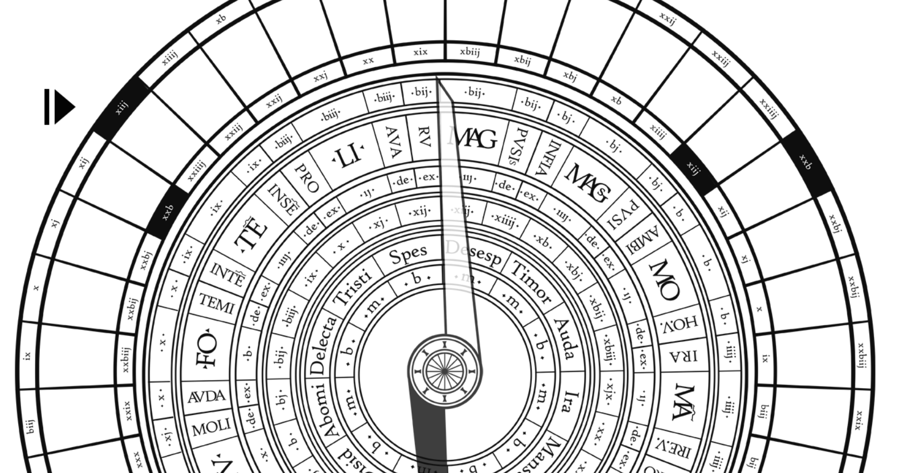Figure 6. Screenshot of the game board. Click on the image above to open the digital game board in a new tab
You can experiment with playing the game by following these simplified rules. One player is the black pointer, the other the white. “Move” the piece that the pointer selects. Note that we haven’t implemented moving game pieces so you have to keep track of your pieces by taking notes. Players take turns. Keep track of what square your game piece is in (eg. FO, MOLI, IRA, PVSI, MAGs etc.) by jotting down its lettering and the number of the square you end up in (for example: FO square 18). One player moves clockwise, the other counterclockwise.
1. Open the digital game board in a new tab by clicking this link
2. Press the play button and count to a number between two and six, press pause. 1st movement - Read the outer ring: Move this number of squares forward with the vice or virtue. Example: FO always moves 10 squares for the first movement.
3. 2nd movement - For virtues only: Read the ring below the name of the virtue, and move this number of squares forward. Example: FO (b=) 5 is the number below the name, and being a virtue, always moves 5 squares for this second movement.
4. 3rd movement - Calculate your degree of intention:
For virtues: subtract the degree of intention (middle ring, numbers 1-24) from the number below the name of the virtue. Example: FO: (b=) 5 is the number below the name and we get eg. 10 on the intention ring so: 10 - 5 = +5 squares to the third movement.
For vices: subtract the number on the outer ring from the degree of intention (middle ring, numbers 1-24). Example: MOLI, 11 is the number on the outer ring and we get eg. 10 on the intention ring so: 10 - 11 = -1 square for the third movement.
-> Move this number of squares. If the number is negative, move backwards.
Example from the original rules:
The fifth rule of virtues. Every virtue can have three moves, two natural moves and one accidental move: the natural ones correspond to its two numbers, and the virtue shall move such many squares: the upper number, which is their order, first, and then the lower number, which is their natural value. The accidental move will be to move as many squares forward as there are degrees of intention, and so many points it will accumulate from outside, and, if there is remission, it will lose as many. If there is neither intention nor remission, it moves only twice with no other gain. (Simões 2023)
5. The game ends when one of the players gets all of their virtues to the finishing square. To find out who won the game, count ten points for every virtue that made it past the finishing line and subtract two points for every vice. Whoever has more points wins.
Example from the original rules:
End of game rules. (...) there are three ways to win. One is called intentions, another virtues, and another triumphs. A triumph is worth 2 virtues, and a virtue is worth 36 intentions, done by them and the gains of the game (as we have seen with the rules). When these three kinds of points are added together, the calculation is as follows: the smaller number is taken from the larger number: from intentions, intentions; from virtues, virtues; and from triumphs, triumphs. The player who gathers more points after this subtraction shall be the one taking the prize, because they have gone through life with more merits. (Simões 2023)
One of our findings is that to just play this game of racing the pieces to the finishing line (without having access to the philosophical discourse presented in the book) basically just makes it into a racing game like any other. The significance or meaning of the virtues and vices is not conveyed clearly through the game mechanics of the racing game itself.
The only thing that we learn is that some pieces will tend to go further faster (because of the higher numbers on the outer ring), but that’s about it. If we read the book component where Barros discusses moral theory, we understand that this is because Barros creates an order of importance for the virtues, arguing that some are of higher value than others because they are harder to attain that others. We also learn that the degree of intention with which we behave affects whether virtuous or vicious behavior takes us forwards or backwards in life. For example, to be vicious with lots of intention (a number like 24) makes us move many squares backwards on the game board (and in life), but that to be virtuous with very little intention (a number like 3) can also make us move backwards. This brings us to our next practice-based approach to Barros’ work.
Barros writes in Portuguese, and the game pieces and board are in Latin because Barros wanted to teach Latin. There is no English translation to date so we are soon publishing the first ever English translation of the book/game, translated by Sandra Simões. But another important point is that Barros’ use of language dates to 1540 which makes the text very hard to understand at times. In the process of working on the translation, Sandra, Celeste and Terhi read through the Portuguese text together, and Celeste would often “simplify” the sentences that we struggled to understand.
We found this “translation” between Barros’ original language and a simplified version intriguing so we are working on a contemporary linguistic interpretation of the text in order to make the language easier to understand. We intend to publish the true-to-origin translation alongside our simplified English version in digital format, and you can find a short sneak preview of our approach here. Click on the phrases to toggle between the original and a “simplified” English version.
Click on the image below to open our hack in a new tab:
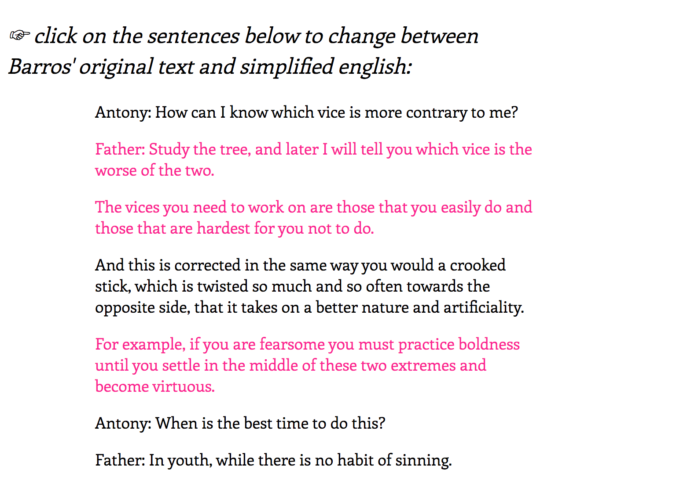Figure 7. Screenshot of Barros english to simple english. Click on the image above to open the project in a new tab
For us the process of interpreting and simplifying the text has been productive as it allows us to engage deeper with the text. Yet, a lot can go missing when we interpret Barros’ text and try to simplify it, and as we work further on this, we will continue working as a group in order to benefit from the analytical capacity of multiple minds. This is also why we like the idea of keeping the original text a click away from our interpretation, so that the reader can also judge whether the simplification is adequate. The simplification is like an abstract or executive summary that can motivate readers to study the original text in more detail. Our hypothesis is that the simplified version may also make Barros’ text more accessible to a wider audience.
In the book and game, Barros shares a set of precepts (or rules) that should be followed to reach a virtuous life. As part of the game, players are supposed to speak out loud - in latin - one of the phrases related to the virtue as they move the virtue pieces around the game board. We made a small piece where users can “play” all of these phrases: they will need to speak them out loud (using the browser’s speech recogniser) to win the game! Unfortunately, there is no speech recognition in Latin, so this mini game is in English.
Open the minigame in a new tab by clicking the image below:
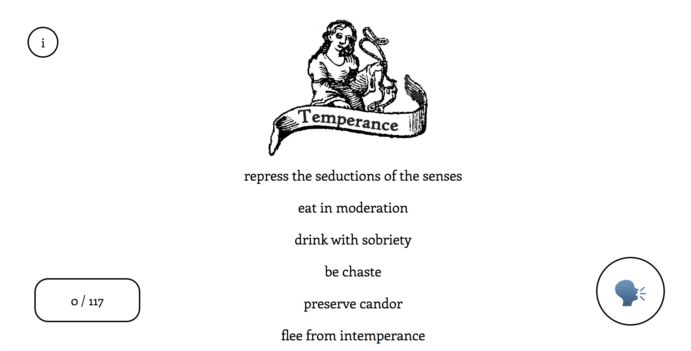Figure 8. Screenshot of our words of wisdom game. Click on the image above to open the project in a new tab
The precepts or phrases related to each virtue allow us to understand what is meant by the different virtues and by their respective vices. For example for the virtue of courtesy: “live elegantly and courteously” is a general description of the virtue of courtesy, but: “may your banter be decent” refers to vice of mockery or mocking behavior and “know how to behave” alludes to the other end of the vice, to be "rustic" or unsophisticated (rusticitas in latin). These descriptions of human behavior shed light on what Barros and other philosophers consider to be the key aspects of each virtue and vice. In this sense, reading the precepts can help in understanding what is meant by the virtues and vices.
Barros’ game concept is part of a broader lineage of medieval diagrams known as volvelles, in which concentric rotating circles are used to engage with relational concepts and multifactor data, such as astronomical motions, calendrical calculations or prognostics. In this hack we adapt code we find to allow users to upload their own volvelles to create digitally rotating volvelles.
Open the page here on the digital review by clicking the image below and upload your own volvelle to rotate it digitally (click and drag).
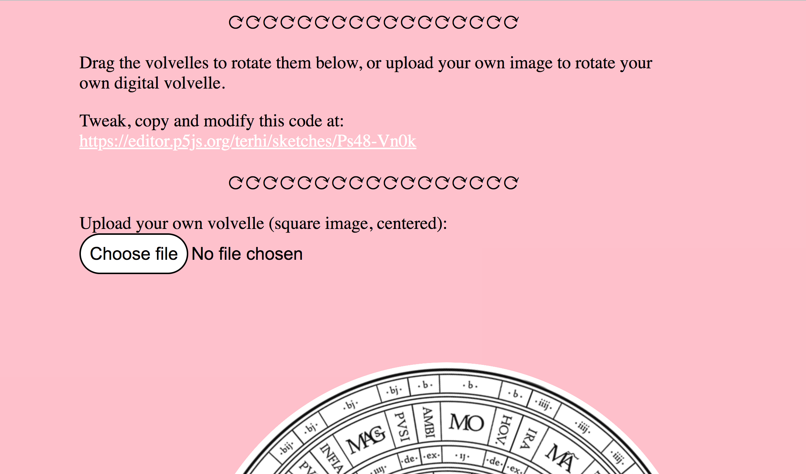Figure 9. Screenshot of our digital volvelle hack. Click on the image above to open the project in a new tab
More specifically, volvelles are defined as “(...) rotating paper or membrane discs, shaped and overlapping and fixed to the page with one or more pins, allowing each disc to be independently rotated around its axis [...] enhancing the semantic value of the text and generating original and unexpected iconic reading spaces” (Crupi 2019, 2). We've included here some examples of paper volvelles from the medieval and early modern periods, which you will see below. In the next paragraph we explain what each volvelle depicts.
The first volvelle, top left, the "prima figura" by Ramon Llull, is a device of mechanical logic made to combine concepts and reach new insights, present in Ramon Llull’s Ars Brevis. In the top right, by Gutun Owain, we have a volvelle used to calculate the position of the sun and the moon in the sky in a manuscript from the 15th c. from the Llyfrgell Genedlaethol Cymru – The National Library of Wales. Bottom left, by João de Barros, we have a volvelle explaining how to compose syllables with two to four letters, from João de Barros' book on grammar. Bottom right we have a drawing of an astrolabe from Giovanni Gallucci's astronomical treatises. The astrolabe is used for calculating one's position using the stars.
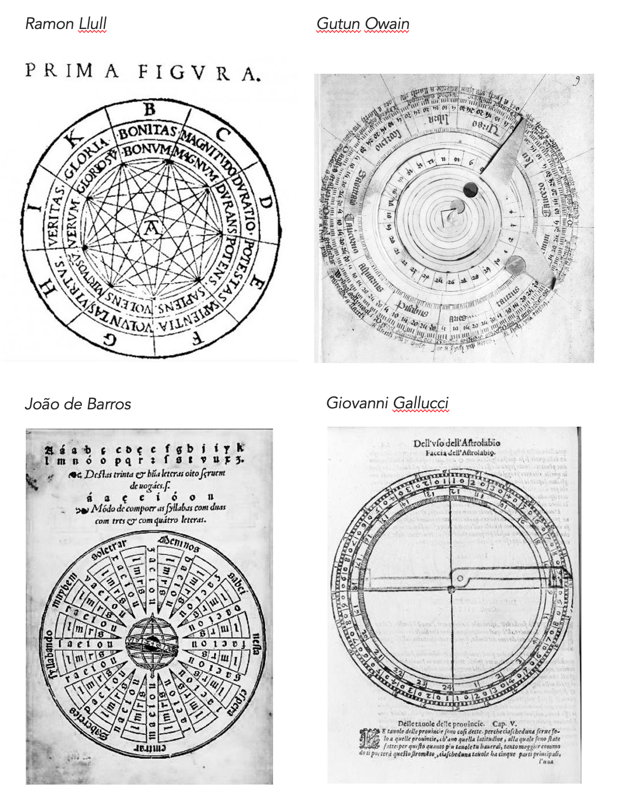Figure 10. Examples of volvelles from the Medieval and Early Modern periods.
In time for the Electronic Literature Organization conference in the summer of 2023 (ELO2023), we adapted code we found to allow users to upload their own image of a volvelle and to make it rotate digitally on screen. Below we reference the author of the original code, give instructions for making your own volvelle and share two examples created during the workshop, but first, the link to the interface.
Terhi found code from 2011 by Logan Franken called HTML5 circle puzzle (https://github.com/loganfranken/Circle-Puzzle). She forked Franken’s code and adapted it so people could upload their own images, and then published it on the p5 online editor so that the code can be viewed, tweaked and modified: https://editor.p5js.org/terhi/sketches/Ps48-Vn0k. The adapted code scales the image to 800px by 800px. She also “translated” some parts of the code to p5.js to make it more accessible to the creative coding community. To get the volvelles to rotate at the correct positions, you can open the code on the p5 editor and change the percentages for the different rotating parts assigned in the variable userVolvelleArray (by default positioned at = [1, 0.75, 0.5, 0.23] ).
For ELO2023, the team prepared a PDF for drawing/writing your own volvelle (scroll below to download and print it), and asked workshop participants to create their own volvelles (see two examples below). If you want to upload your own volvelle, use your phone's “square” format to photograph the volvelle - it must be 100% centred to rotate well. Or you can tweak the image on your computer to centre it. The page does not save the volvelles, so your volvelle will disappear when you close your browser tab or window.
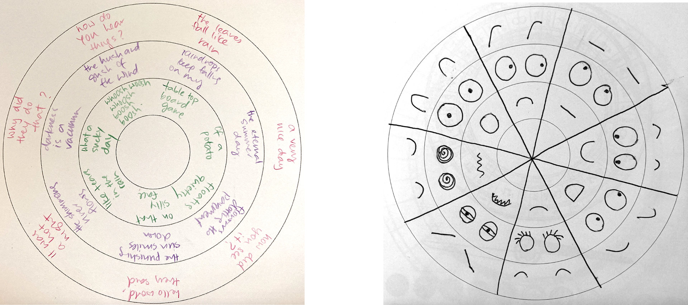Figure 11. Created at ELO2023. Left: a volvelle for generating haikus by workshop participant Christine Chong. Right: a volvelle with line art illustrations of eyebrows, eyes and mouths for generating expressions by Terhi Marttila.
Below you will find a PDF that you can print out, fill and photograph and upload to create your own rotating volvelle.
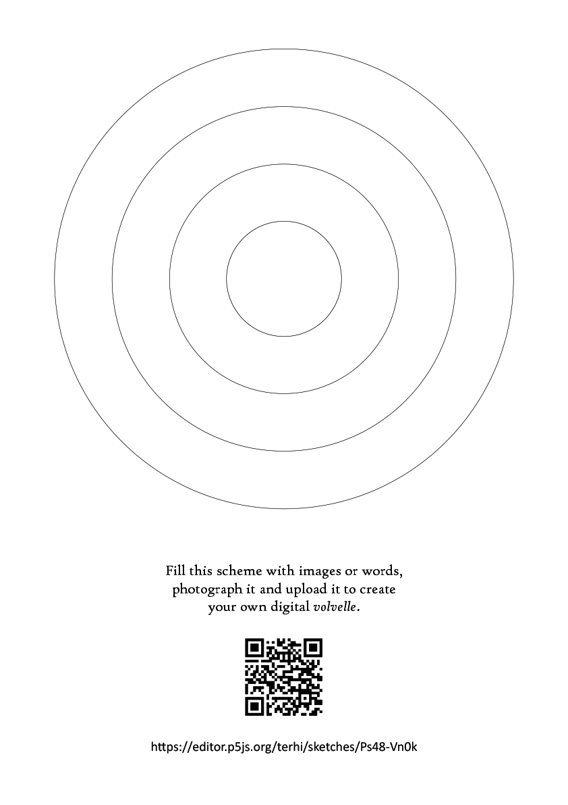Figure 12. Created for ELO2023. Click on the image above to open the PDF, print it, draw/write on it, photograph it and upload it.
The volvelle, as a combinatory approach to organising data, is fascinating. It can be used to create combinatory poems, like in the example by our ELO workshop participant Christine Chong, or it can be used to create visual art that recombines when we rotate the volvelles, such as in the volvelle by Terhi Marttila to create facial expressions. Using this same code, we are working towards publishing, in digitally rotating form, original artwork by Portuguese illustrator Pedro Simões (Simões 2020). In the future, we would like to further modify and expand on Logan Franken’s code to create a library for p5.js so that the creative coding community could explore the form further.
It has been a fantastic ride getting to know Barros’ book-game, and we hope you feel as enticed as we did with these five centuries-old materials. We’ve learned a whole bunch about Aristotle’s Nicomachean Ethics (see Aristotle), and we have learned to analyse real- world situations through the concepts of virtues and vices as well as concepts such as ‘bending the crooked stick to reach the mean’ — another central concept we plan to work on in the future. Each of our practice-based approaches has created knowledge about Barros’ book/game that helps us in steering our practice-based process further in the near future.
We hope that you’ve enjoyed exploring our work-in-process. Please visit https:// historicaltype.eu/hacking to keep up to date with our work and see where the project is currently at.
Aristotle (350 B.C.E.) Nicomachean Ethics. Translated by W. D. Ross. MIT Classics. https://classics.mit.edu/Aristotle/nicomachaen.html
Barros, J. de (1540) Dialogo de preceitos moraes co[m] prática delles, em módo de iogo. Luis Rodrigues. https://purl.pt/12149
Barros, J. de (1552) Asia de Joam de Barros: dos fectos que os portugueses fizeram no descobrimento & conquista dos mares & terras do Oriente: volume 1. Germão Galharde. https://am.uc.pt/item/58561
Barros, J. de (1553) Asia de Joam de Barros: segunda decada... dos fectos que os portugueses fizeram no descobrimento & conquista dos mares & terras do Oriente: volume 2. Germão Galharde.
Barros, J. de (1563) Terceira decada da Asia de Joam de Barros: dos feytos que os portugueses fizeram no descobrimento & conquista dos mares & terras do Oriente. Ioam de Barreira.
Barros, J. de (1563) Dialogo de João de Barros com dous filhos seus, sobre preceptos moraes, em modo de jogo. João de Barreira. http://purl.pt/15189
Crupi, G. (2019) Volvelles of knowledge: Origin and Development of an instrument of scientific imagination (13th-17th centuries). JLIS.It, 10(2), 1-27. https://doi.org/10.4403/jlis.it-12534
Pedro, C. & Higuera, J. (2020) Workshop: The Game of Moral Precepts. 27-28 Feb. At Faculdade de Letras da Universidade do Porto. https://ifilosofia.up.pt/proj/fdtw/the_game_of_moral_precepts
Pedro, C. (2021) A Sixteenth-Century Board Game by João de Barros. In Alexander Samuel Wilkinson (Ed.) Illustration and Ornamentation in the Iberian Book World, 1450-1800 (pp. 284-314). BRILL. https://brill.com/display/book/edcoll/9789004447141/BP000024.xml
Simões, P. (2020) Diagramas circulares de arte combinatoria. Artist portfolio on behance.net. https://www.behance.net/gallery/143486181/Diagramas-circulares-de-arte-combinatoria
Simões, S. (2023) Dialogue on moral precepts between João de Barros and two of his children in the form of a game.. English translation of Barros, J. de (1540) Dialogo de preceitos moraes co[m] prática delles, em módo de iogo. Unpublished.